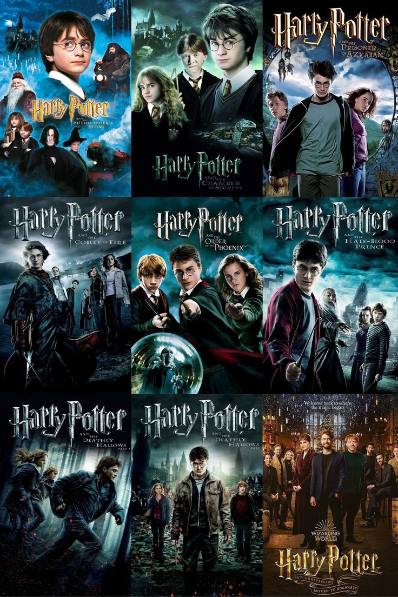

The Harry Potter film series is one of the most popular and successful franchises in cinema history. Based on the bestselling books by J.K. Rowling, the series consists of eight films released between 2001 and 2011. It follows the story of a young wizard, Harry Potter, as he discovers his magical heritage and battles the dark wizard Lord Voldemort. The films are set in the magical world of Hogwarts School of Witchcraft and Wizardry, where Harry makes loyal friends like Hermione Granger and Ron Weasley. Each movie shows their growth, the challenges they face, and their fight against evil. The series is known for its exciting plot, strong characters, and magical special effects. It explores themes such as friendship, courage, love, and the battle between good and evil. Over time, the tone of the films becomes darker, reflecting the characters’ maturity and the seriousness of the war against Voldemort. In addition to its storytelling, the series was praised for its impressive casting, including legendary British actors such as Alan Rickman (Severus Snape), Maggie Smith (Professor McGonagall), and Ralph Fiennes (Lord Voldemort). The series also helped launch the careers of its young stars. The Harry Potter films had a major impact on global pop culture, inspiring theme parks, merchandise, video games, and spin-off stories such as Fantastic Beasts. It created a powerful fan community that remains active years after the final film. With its memorable music, emotional depth, and magical world-building, the Harry Potter series continues to enchant new generations and holds a special place in the hearts of millions around the world.
